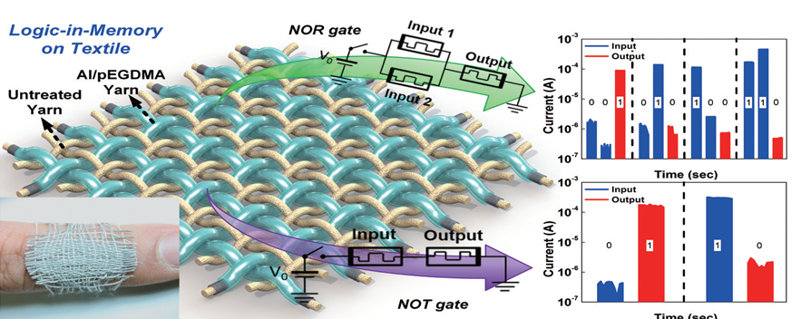

Report by Subjects
Report by Subjects
KAIST RESEARCH ACHIEVEMENTS
Memristive Functional Device and Circuit on Fabric for Fibertronics
School of Electrical Engineering
Yang-Kyu Choi, Sung-Yool Choi
Summary
Fabric-based electronic textiles (e-textiles) are the fundamental components of wearable electronic systems, which can provide convenient hand-free access to computer and electronics applications. However, e-textile technologies presently face significant technical challenges. These challenges include difficulties of fabrication owing to the delicate nature of the materials, and limited operating time, a consequence of the conventional normally-on computing architecture, with volatile power-hungry electronic components, and modest battery storage. we report a novel poly(ethylene glycol dimethacrylate) (pEGDMA)-textile memristive nonvolatile logic-in-memory circuit, enabling normally-off computing, that can overcome those challenges. To form the metal electrode and resistive switching layer, strands of cotton yarn were coated with aluminum (Al) using a solution dip coating method, and the pEGDMA was conformally applied using an initiated chemical vapor deposition (iCVD) process. The intersection of two Al/pEGDMA coated yarns becomes a unit memristor in the lattice structure. The pEGDMA-Textile Memristor (ETM), a form of crossbar array, was interwoven using a grid of Al/pEGDMA coated yarns and untreated yarns. The former were employed in the active memristor and the latter suppressed cell-to-cell disturbance. We experimentally demonstrated for the first time that the basic Boolean functions, including a half adder as well as NOT, NOR, OR, AND, and NAND logic gates, are successfully implemented with the ETM crossbar array on a fabric substrate. This research may represent a breakthrough development for practical wearable and smart fibertronics.
Background
As the IoT era when all objects are connected through the Internet is coming up, a lot of research for wearable electronics has been actively developed. Fabric-based electronic textiles (e-textiles) are the fundamental components of wearable electronic systems, which can provide convenient hand-free access to computer and electronic applications.
Conventional fabric-based electronics suffer from various technical problems that need to be solved, including their requirements for low power consumption, high integration density, water-stable material for outdoor use, and complicated fabrication processes, such as masking, etching, and evaporation steps. Among them, unresolved power consumption issues arising from limited battery capacity and long standby periods have seriously hindered the progress of battery-powered wearable electronic systems. Furthermore, long-standing challenges in prolonging the lifetimes of batteries have not yet been successfully addressed. To resolve those limitations, textile- and fabric-based energy harvesters are being widely developed as potential solutions, however, further development of their energy generation capabilities is still required. Moreover, the aforementioned issue becomes severe if a higher-level fibertronic system that includes logic circuitry is considered for multi-functional applications with high packing density. The demand of high power fundamentally results not only from the huge power-hungry data transfer required by the von Neumann architecture but also from the normally on computing architecture, which is designed with volatile working memory and volatile logic circuits composed of many transistors. Therefore, in order to realize practical fabric-based wearable electronic systems to overcome the limited battery capacity, a novel computing architecture that can exploit a nonvolatile device with low power consumption needs to be developed with a real fabric material and structure. In this study, we report a novel poly(ethylene glycol dimethacrylate) (pEGDMA)-textile memristive nonvolatile logic-in-memory circuit, enabling normally off computing, that can overcome the aforementioned challenges. The memristor is a fourth electrical component that limits or regulates the flow of electrical current in a circuit and remembers the amount of charge that has previously flowed through it. The memristors is important because it is non-volatile, i.e., it retains a memory state without power consumption.

Contents
We have experimentally demonstrated novel nonvolatile logic-in-memory circuits named the electronic textile memory (ETM) enabling normally off computing on a fabric substrate for energy-efficient wearable fibertronic systems. The circuits were realized using a memristor-based crossbar array architecture composed of interwoven Al/pEGDMA-coated fibers. The fibers were prepared via the hybrid process of iCVD and a solution dip coating method. To make the crossbar (cross-point) structure, Al/pEGDMA-coated fibers and untreated cotton fibers are intercalated physically without any additional treatment step. The fabricated ETM devices showed not only outstanding electrical performances, including low operating voltage (‹1.5 V), good retention ( ›1.5×107), and endurance ( ›500 cycles) but also mechanical and chemical robustness without any additional passivation layer. Furthermore, we succeeded in implementing basic Boolean functions, including NOT, NOR, OR, AND, and NAND gates even on the fabric. To verify the practicality, we experimentally demonstrated a half adder, which was realized via the appropriate network of NOT and NOR gates using only five memristors on the genuine fabric.
Expected effect
- These results suggest that the ETM array can be used to implement much more complex integrated circuits for fully functional and energy-efficient smart e-textiles. This memristive circuit platform would may represent a milestone in the development of a battery-powered wearable fibertronic system. The energy-efficient normally off computing and novel computing architecture implemented on the real fabric can dramatically reduce power consumption and prolong battery usage time. Additionally, this platform overcomes the limitations of conventional wearable devices to be embedded with additional electronic components on a fabric by use of a complicated transfer or fabrication process. Furthermore, it has the potential to break the strongly tied relationship between fabrication cost and device performance. Through this research, fully fiber-type electronic system composed of the embedded memory and logic circuits is expected to grow the market of wearable electronics. The system can also be used in the real life in the IoT era as well as for a military or medical purpose with improved reliability. As a consequence, the proposed architecture on the real fabric puts one step forward to realize an e-textile device and system.
Research Funding
This work was supported by the Center for Integrated Smart Sensors funded by the Ministry of Science, ICT & Future Planning as Global Frontier Project (CISS-2011-0031848), and the Pioneer Research Center Program through the National Research Foundation of Korea funded by the Ministry of Science, ICT & Future Planning (Grant 2012-0009600)
This work was partially supported by NRF (National Research Foundation of Korea) Grant funded by the Korea Government (NRF-2014H1A2A1022137 and 2017H1A2A1042274-Global Ph.D. Fellowship Program) and IDEC (EDA Tool, MPW)
his research was also supported by the Global Frontier Center for Advanced Soft Electronics (2011-0031640) and Wearable Platform Materials Technology Center (WMC) funded by the NRF Grant of the Korean Government (MSIP) (No. 2016R1A5A1009926)
Research Outcomes
H. Bae†, B. C. Jang†, H. Park, S.-H. Jung, H. M. Lee, J.-Y. Park, S.-B. Jeon, G. Son, I.-W. Tcho, K. Yu, S. G. Im, S.-Y. Choi*, and Y.-K. Choi*, “Functional Circuitry on Commercial Fabric via Textile-Compatible Nanoscale Film Coating Process for Fibertronics,” Nano Letters, 17, 6443-6452 (2017)